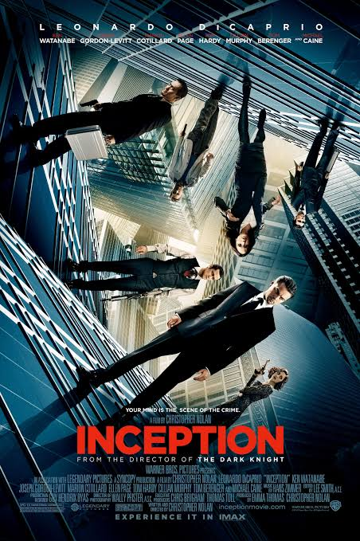
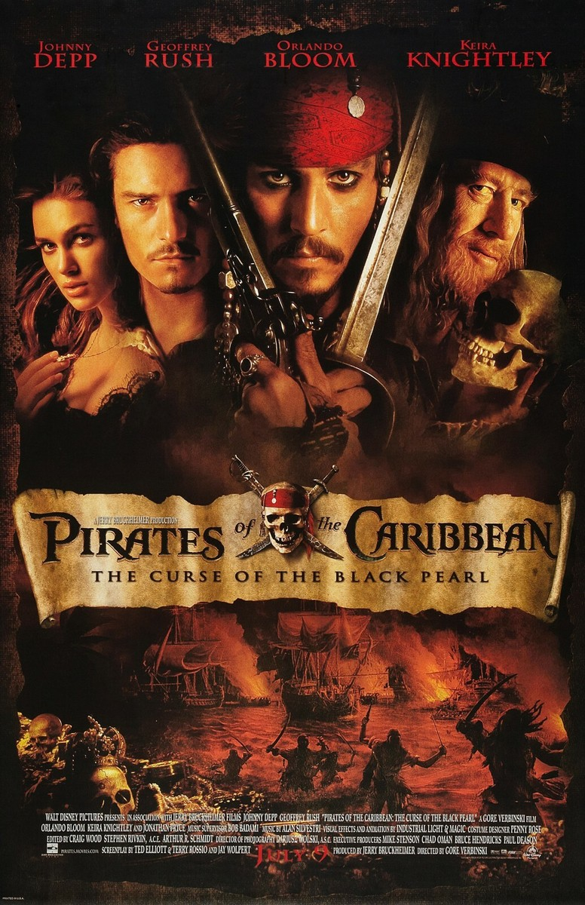
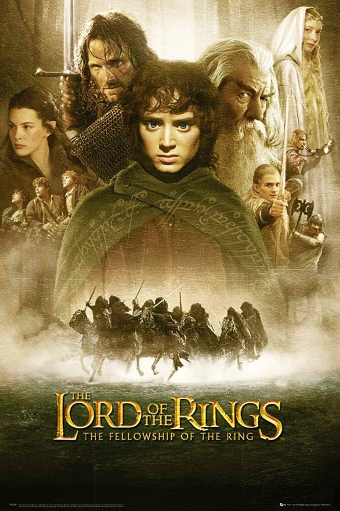
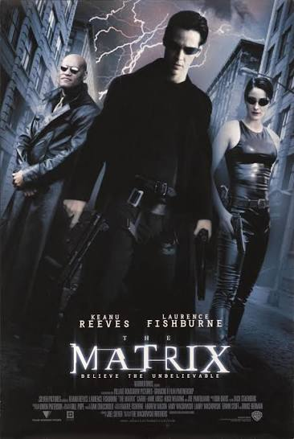
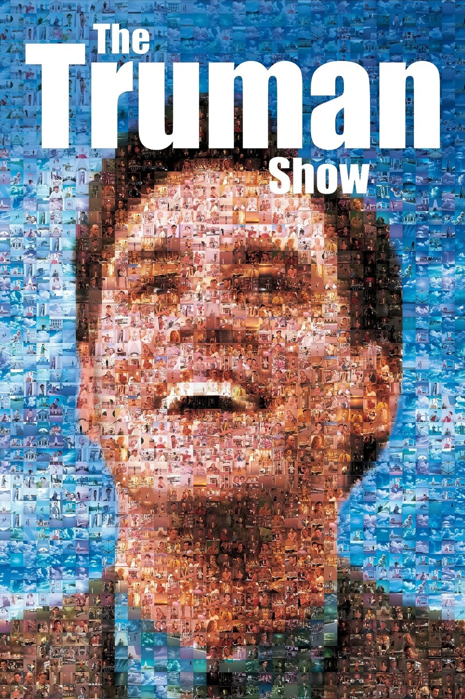

הסרטים הממולצים שלנו
ברוכים הבאים ל- MovieBox!כאן תמצאו סרטים שכדאי לראות - עם תקציר, ז' אנר ודירוג

התחלה(Inception)
שנה:2010
ז'אנר מדע בדיוני, פעולה
דירוג:⭐8.8
גנב מיוחד נכנס לחלומות של אנשים כדי לגנוב סודות. הפעם הוא מקבל משימה הפוכה : לשתול רעיון,
לעמוד הסרט ב-IMDB
שודדי הקאריביים קללת הפנינה השחורה(Pirates of the Caribbean: The Curse of the Black Pearl)
שנה:2003
ז'אנר הרפתקאות,פנטזיה ואקשן
דירוג:⭐8.1
קפטן ג'ק ספארו וצוותו יוצאים למסע פנטזיה והרפתקאות בלב ים כדי להציל את בת המושל ולשבור קללה עתיקה שמחזיקה את ספינת "הפנינה השחורה"
לעמוד הסרט ב-IMDB
שר הטבעות: אחוות הטבעת(The Lord of the Rings: The Fellowship of the Ring)
שנה:2001
ז'אנר הרפתקאות,פנטזיה ואקשן
דירוג:⭐8.9
ההוביט פרודו בגינס מקבל טבעת קסומה ועוצמתית, ומגלה שעליו לצאת למסע מסוכן להשמדתה כדי לעצור את שר האופל סאורון. לשם כך, הוא נעזר ב"אחוות הטבעת" – חבורה של בני אדם, יצורים קסומים וחברים, המגנים עליו מפני הסכנות שבדרך
לעמוד הסרט ב-IMDB
המטריקס(The Matrix)
שנה:1999
ז'אנר מדע בדיוני ופעולה
דירוג:⭐8.7
מתכנת מחשבים והאקר בשם ניאו מגלה שהמציאות המוכרת לו היא למעשה הדמיית מחשב ("המטריקס") שנוצרה כדי לשעבד את האנושות. הוא מצטרף לקבוצת מורדים כדי להילחם במכונות השולטות, מתוך אמונה שהוא "הנבחר" שיכול להציל את העולם.
לעמוד הסרט ב-IMDB
המופע של טרומן(The Truman Show)
שנה:1998
ז'אנר דרמה קומית / מדע בדיוני סאטירי
דירוג:⭐8.2
טרומן ברבנק (בכיכובו של ג'ים קארי) הוא סוכן ביטוח רגיל שחי חיים שלווים בעיירה ציורית. הוא אינו מודע לכך שכל חייו, מרגע לידתו, הם למעשה תוכנית ריאליטי מצליחה המשודרת לכל העולם. כל האנשים סביבו, כולל אשתו וחברו הטוב ביותר, הם שחקנים, והעיירה שבה הוא חי היא אולפן קולנוע ענק. הסרט עוקב אחר השלב שבו טרומן מתחיל לחשוד שמשהו במציאות שלו אינו כשורה, ומנסה לגלות את האמת ולברוח.
לעמוד הסרט ב-IMDB